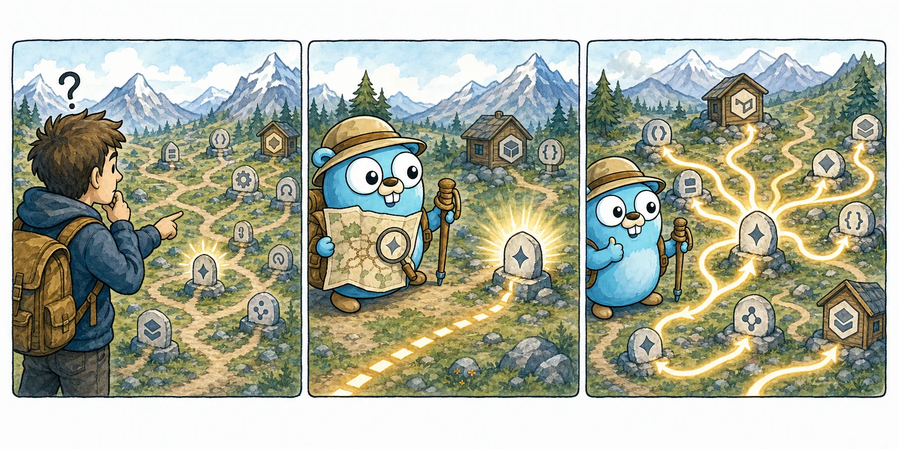
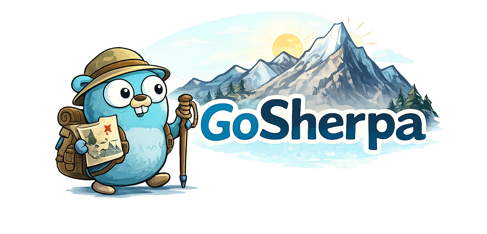
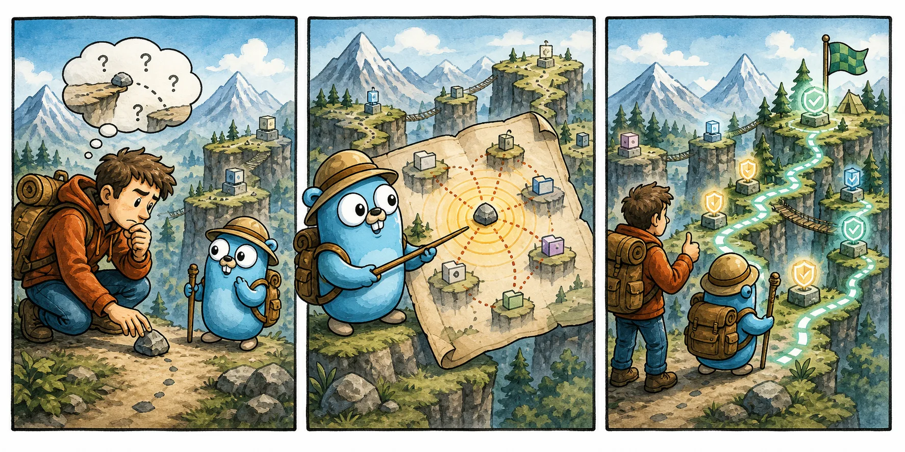
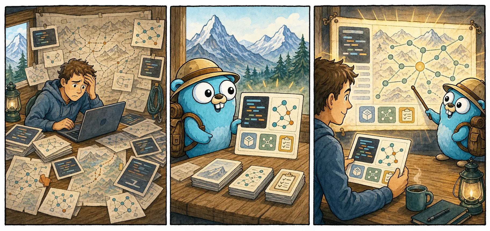

Symbole finden
Vom Namen zur Definition: GoSherpa zeigt dir Signatur, Package, Datei, Dokumentation und passende Treffer, ohne dass du das Projekt durchklicken musst.
gosherpa symbol ParseFile

GoSherpaStrukturelle Code-Intelligenz für Go-Projekte
Frag eine Code-Struktur-Frage. Bekomme eine kleine, verlässliche Antwort: Symbole, Referenzen, Call-Pfade, Impact, Tests und Agent-Kontext direkt aus deinem Go-Repository.
Warum GoSherpa
GoSherpa liest dein Go-Projekt strukturell statt magisch. Die CLI gibt dir ruhige, wiederholbare Antworten, die du im Terminal scannen, in Reviews verwenden oder als kompakten Kontext an Coding Agents weitergeben kannst.
Frag GoSherpa
Die Demo zeigt typische Workflows als kompakte CLI-Ausgaben: verstehen, Kontext holen, Impact prüfen und Tests planen.
gosherpa explain ParseFile
Agentische Workflows
GoSherpa liefert deterministischen, begrenzbaren Kontext für Go-Repositories. AI Coding Agents können mit JSON, Kontextlimits und Diff-Impact prüfen, bevor sie Code ändern.
Comic-Guides
Die Bilder erzählen die Geschichte, die CLI liefert die Details.

Vom Namen zur Definition: GoSherpa zeigt dir Signatur, Package, Datei, Dokumentation und passende Treffer, ohne dass du das Projekt durchklicken musst.
gosherpa symbol ParseFile

Ein kleiner Change kann mehrere Routen berühren. GoSherpa zeigt betroffene Packages, geänderte Symbole, Risiko und die Tests, die jetzt wirklich zählen.
gosherpa impact diff --base HEAD

Für Menschen lesbar, für Tools stabil: Kontextbefehle exportieren Source-Auszüge, Beziehungen, Tests, Grenzen und JSON in einer kompakten Form.
gosherpa context symbol ParseFile --max-references 20 --max-tests 10 --json
Was die Software kann
GoSherpa ist bewusst als CLI gebaut: kleine Befehle, stabile Ausgaben, menschenlesbar zuerst und mit JSON, wenn Automatisierung gebraucht wird.
gosherpa symbols --kind function
gosherpa refs ParseFile --kind call
gosherpa path Run ParseFile
gosherpa deps ./internal/sherpa
gosherpa pr --base HEAD
gosherpa context diff --base HEAD --max-files 20 --json
Für Menschen und Agents
GoSherpa versucht nicht, deine IDE zu ersetzen. Es macht die Struktur deiner Codebasis sichtbar, damit du beim Lesen, Ändern und Reviewen weniger raten musst.
Schneller verstehen, wo etwas lebt, wer es benutzt und wie groß der nächste Schritt wirklich ist.
PR-Zusammenfassungen, betroffene Tests und Risiko-Hinweise direkt aus dem Diff.
Stabile JSON-Umschläge und begrenzte Kontextbefehle für Scripts, CI und Coding Agents.
# Analyse-Vertrauen prüfen gosherpa doctor --json # Begrenzter Diff-Kontext gosherpa context diff --base HEAD --max-files 20 --max-symbols 40 --max-tests 20 --max-bytes 12000 --json # Impact und Testplanung gosherpa impact diff --base HEAD --json gosherpa tests affected --base HEAD --json
Ausprobieren
GoSherpa ist ein frühes MVP, aber die Grundroute steht: fragen, finden, Kontext holen und verstehen. Für größere Workflows führt dich das README weiter.
git clone https://github.com/panndabea/GoSherpa.git cd GoSherpa go run ./cmd/gosherpa version go run ./cmd/gosherpa search parse file go run ./cmd/gosherpa symbol ParseFile go run ./cmd/gosherpa refs ParseFile --kind call